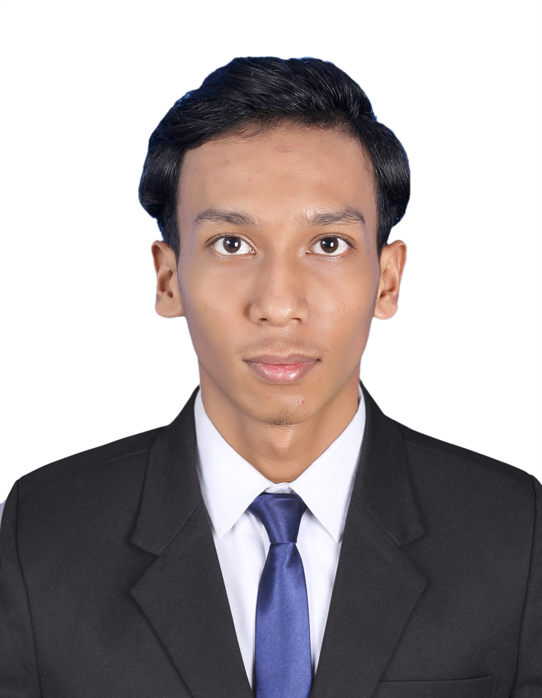

ប្រមូលផ្តុំរាល់ឯកសារពាក់ព័ន្ធនឹងគម្រោងស្រាវជ្រាវ (Capstone), ប្រព័ន្ធគ្រប់គ្រងស្វ័យប្រវត្តិកម្ម, Internet of Things (IoT) និងការរចនាប្លង់សៀគ្វីអេឡិចត្រូនិក។
ខ្ញុំជានិស្សិតឆ្នាំទី៤ នៃវិទ្យាស្ថានជាតិពហុបច្ចេកទេសកម្ពុជា (NPIC)។ ខ្ញុំមានចំណង់ចំណូលចិត្តខ្លាំងក្នុងការអភិវឌ្ឍន៍ប្រព័ន្ធស្វ័យប្រវត្តិកម្ម (Automation) រួមបញ្ចូលជាមួយបច្ចេកវិទ្យា IoT និងការរចនា Hardware ដើម្បីបង្កើតជាដំណោះស្រាយថ្មីៗក្នុងវិស័យឧស្សាហកម្ម និងបច្ចេកវិទ្យា។
ពានរង្វាន់ជ័យលាភី និងវិញ្ញាបនបត្រដែលទទួលបាន
ទទួលបានជ័យលាភីមេដាយសំរឹទ្ធ (Bronze Award) ក្នុងការប្រកួតប្រជែងជំនាញវិជ្ជាជីវៈកម្រិតអន្តរជាតិ វគ្គផ្តាច់ព្រ័ត្រឆ្នាំ២០២៦។
វិញ្ញាបនបត្របញ្ជាក់ពីការចូលរួមអភិវឌ្ឍន៍ឧបករណ៍ហ្វឹកហាត់ Morse Code ទទួលបានពានរង្វាន់អន្តរជាតិនៅទីក្រុងតូក្យូ ប្រទេសជប៉ុន។
វិញ្ញាបនបត្របញ្ជាក់ពីការចូលរួមយ៉ាងសកម្មក្នុងកម្មវិធីស្វែងរកទិសដៅវិទ្យុទាក់ទង (ARDF) នៅឧទ្យានជាតិគិរីរម្យ កាលពីថ្ងៃទី២២ ខែមីនា ឆ្នាំ២០២៤។
សញ្ញាបត្របច្ចេកទេស និងវិជ្ជាជីវៈទី២ (កម្រិត៣) ជំនាញទូរគមនាគមន៍ ចេញដោយក្រសួងការងារ និងបណ្តុះបណ្តាលវិជ្ជាជីវៈ ឆ្នាំ២០២២។